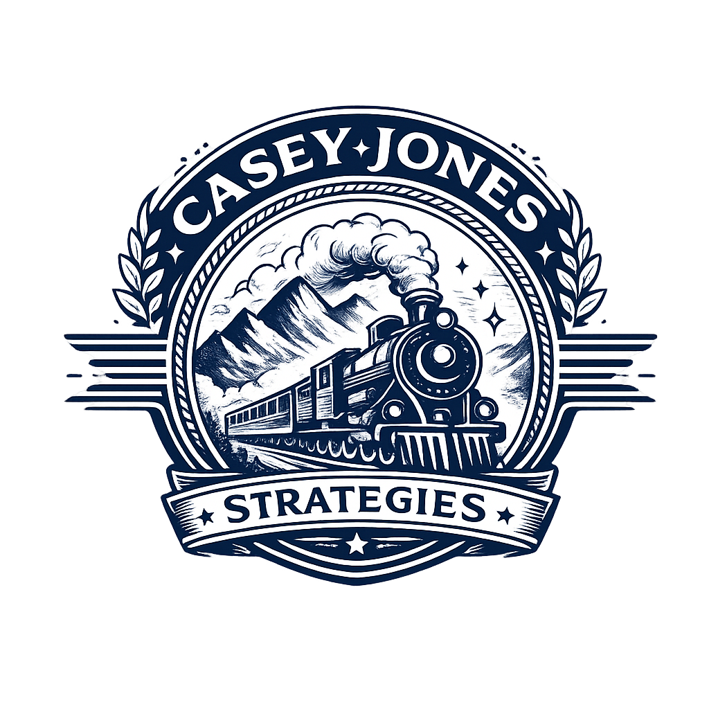

ALTERNATE SEAL · DECORATIVE

The decorative banner.
A second composition with laurel wings and a ribbon — use sparingly on hero illustrations, print materials, or limited campaign collateral. Keep the master mark dominant.
assets/logo-mono.png · 1024 × 1024